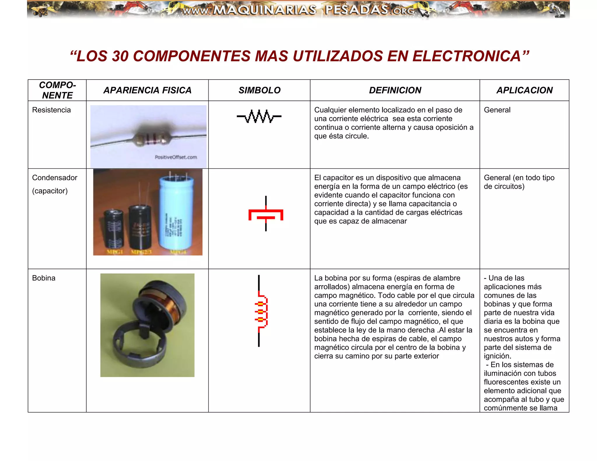
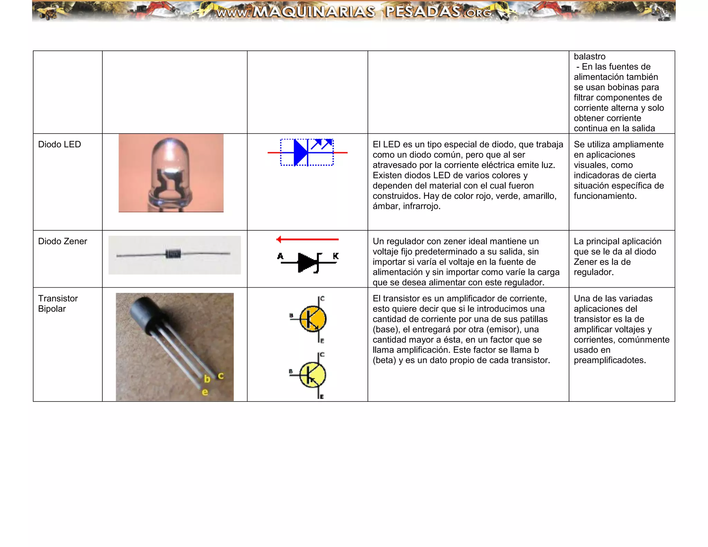

Descarga una guía completa sobre circuitos eléctricos básicos, que incluye teoría, ejercicios y ejemplos prácticos.
Descargar PDFVe este video tutorial que explica los conceptos básicos de los circuitos eléctricos, incluyendo componentes, tipos de circuitos y ejemplos prácticos.
Consulta estas imágenes detalladas de los componentes electrónicos más comunes utilizados en los circuitos eléctricos.
 Explora estos enlaces para obtener más información y recursos adicionales sobre circuitos eléctricos básicos.